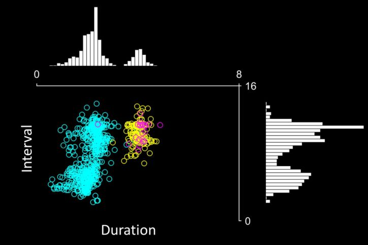
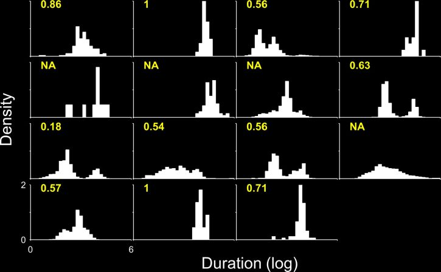

Find the full text here or here (pre-print version)
Here we analyse the seizure durations and inter-seizure intervals in 15 people with epilepsy. The data were continuously recorded during a clinical trial for an implantable seizure prediction device. The details of data collection can be found here. We considered three "types" of seizure in this analysis:
Clinical: seizures with clinical symptoms
Clinically identical: seizures without symptoms, but the EEG recording indistinguishable from clinical seizures
Sub-clinical: seizures without symptoms and different in appearance on EEG (usually abnormal "bursting" activity)
This dataset provides a unique opportunity to investigate the distribution of seizures over long-term periods. The timing of seizures (both duration and time between seizures) provides information on the brain process/es that generate seizures. For instance properties of interest - such as whether seizures are completely random or are dependent on past activity - can be inferred from simply looking at timing information, provided there is enough data. If there are patterns in seizure timing these can be used to improve seizure prediction algorithms.
Seizure duration and inter-seizure interval were not uniformly distributed.
Instead they tended to cluster around one or more characteristic time (when viewed on a logarithmic scale)
An example patient showing seizure clusters (log scale)
Typically patients with multiple populations of seizure duration also had multiple populations of inter-seizure interval. Long wait times were not necessarily followed by longer seizures and vice versa
The number and position of seizure peaks was different for each subject (people show distinct patterns of seizure activity)
Patients with a single peak in seizure duration (also inter-seizure interval) had better prediction outcomes in the clinical trial
Duration histograms labelled with prediction sensitivity (NA = trial was not completed)
My data won't fit on your screen!